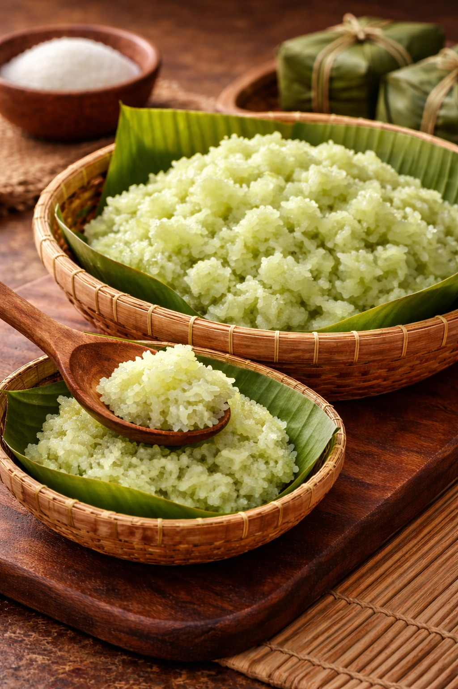

Selamat datang di website kami. Website ini menyajikan informasi mengenai pembuatan tape beras ketan putih. Tape beras ketan putih merupakan makanan fermentasi tradisional Indonesia yang bahan dasarnya adalah beras ketan putih dan dibuat dengan bantuan ragi tape. Makanan ini memiliki rasa khas yang manis dan sedikit asam, tekstur yang lembut dan berair, serta aroma khas yang dihasilkan dari proses fermentasi.
Learn moreTape beras ketan putih merupakan makanan tradisional Indonesia yang dibuat melalui proses fermentasi beras ketan putih menggunakan ragi tape. Proses fermentasi ini membuat pati yang terdapat pada beras ketan diuraikan oleh mikroorganisme menjadi gula sederhana sehingga menghasilkan rasa manis, sedikit asam, dan aroma khas tape. Selain itu, tekstur beras ketan juga berubah menjadi lebih lunak dan sedikit berair setelah difermentasi selama sekitar 2–3 hari pada suhu ruang. Proses fermentasi tersebut juga memengaruhi karakteristik rasa, aroma, dan tekstur tape yang dihasilkan.
Selain memiliki cita rasa khas, tape beras ketan putih juga memiliki beberapa manfaat karena proses fermentasi dapat menghasilkan vitamin B dan mikroorganisme yang baik bagi pencernaan. Tape biasanya dikonsumsi langsung sebagai makanan ringan oleh masyarakat. Selain itu, tape juga sering diolah kembali menjadi berbagai hidangan, seperti es tape, kolak tape, maupun campuran pada kue tradisional. Oleh karena itu, tape beras ketan putih tidak hanya menjadi makanan khas yang populer, tetapi juga memiliki nilai budaya dan gizi bagi masyarakat.
Langkah-langkah dalam melakukan penelitian ini dimulai dengan menakar beras ketan putih sebanyak 200 gram sesuai kebutuhan. Beras ketan kemudian dicuci dengan air mengalir hingga bersih dan direndam selama 2 jam. Jika ingin menghasilkan tape berwarna hijau, dapat ditambahkan 2 tetes pewarna hijau saat proses perendaman, lalu diaduk hingga merata. Setelah proses perendaman selesai, beras ketan ditiriskan, kemudian dikukus selama 15 menit dengan waktu pengukusan dihitung sejak air mendidih. Selanjutnya, beras ketan yang telah dikukus dipindahkan ke dalam mangkuk atau baskom, lalu ditambahkan 200 ml air panas dan diaduk hingga air terserap.
Setelah itu, beras ketan dikukus kembali selama 10 menit dengan waktu dihitung sejak air mendidih hingga matang. Beras ketan yang sudah matang kemudian dikeluarkan dan disebarkan di atas tampah atau nampan, lalu didiamkan hingga suhunya benar-benar dingin dan tidak lagi lembap akibat panas. Selanjutnya, 1 keping ragi tape dihaluskan dan dibagi menjadi 4 bagian sama banyak. Sebanyak ¼ bagian ragi ditaburkan secara merata pada beras ketan yang telah dingin, dan jika ragi masih kasar dapat menggunakan saringan saat menaburkannya. Beras ketan kemudian diaduk perlahan hingga ragi tercampur merata. Terakhir, beras ketan dimasukkan ke dalam 4 toples atau wadah tertutup untuk disimpan selama waktu dan pada suhu tertentu serta diamati proses fermentasinya hingga menjadi tape ketan.

Berdasarkan hasil penelitian mengenai fermentasi tape beras ketan putih dengan variasi lama fermentasi dan suhu penyimpanan, dapat disimpulkan bahwa proses fermentasi memengaruhi tekstur, aroma, rasa, serta kadar gula tape.
Pada fermentasi selama 3 hari di suhu ruang, tape beras ketan putih memiliki tekstur lunak dan sedikit berair, aroma khas tape yang mulai kuat, serta memiliki rasa manis dengan sedikit asam khas tape, dengan kadar gula yang cukup tinggi mendekati puncak kadar gula yaitu pada hari kedua karena pati telah banyak terurai menjadi gula sederhana.Pada fermentasi selama 5 hari di suhu ruang, tape memiliki tekstur lebih lunak dan lebih berair, aroma alkohol yang lebih kuat menghasilkan aroma yang sedikit lebih menyengat, serta rasa manis dan asam yang seimbang, sementara kadar gula menurun dibandingkan hari ke-3 karena sebagian gula telah diubah oleh ragi menjadi alkohol dan senyawa asam.
Pada fermentasi 2 hari di suhu ruang dan 9 hari di kulkas (total 11 hari), tape memiliki tekstur lunak dan berair, aroma tape masih cukup kuat namun tidak terlalu menyengat, serta rasa manis dan asam yang seimbang, penyimpanan di kulkas memperlambat aktivitas mikroorganisme sehingga kadar gula relatif masih stabil meskipun sedikit menurun selama penyimpanan.
Sementara itu, pada fermentasi 4 hari di suhu ruang dan 7 hari di kulkas (total 11 hari), tape memiliki tekstur yang terlalu lunak dan lebih berair daripada biasanya, aroma fermentasi masih cukup kuat, serta rasa manis-asam khas tape yang masih seimbang dan sedikit didominasi asam, dengan kadar gula lebih rendah karena fermentasi di suhu ruang berlangsung lebih lama sebelum penyimpanan di kulkas.
Dengan demikian, dapat disimpulkan bahwa waktu fermentasi terbaik untuk pembuatan tape beras ketan putih adalah selama 2–3 hari, yang menghasilkan rasa manis dengan sedikit asam, tekstur lunak dan lembut, serta aroma khas yang tidak terlalu menyengat. Fermentasi selama 4–5 hari menghasilkan rasa yang lebih asam dan tekstur yang lebih lunak. Kadar gula tape meningkat pada awal fermentasi dan mencapai puncaknya pada hari ke-2, kemudian menurun karena diubah menjadi alkohol dan asam. Penyimpanan pada suhu kulkas memperlambat proses fermentasi sehingga perubahan kadar gula terjadi lebih lambat. Secara umum, semakin lama fermentasi, tekstur tape menjadi semakin lunak dan berair, serta aroma fermentasinya semakin kuat. Dengan demikian, lama fermentasi dan suhu penyimpanan memengaruhi tekstur, aroma, rasa, serta kadar gula tape beras ketan putih.